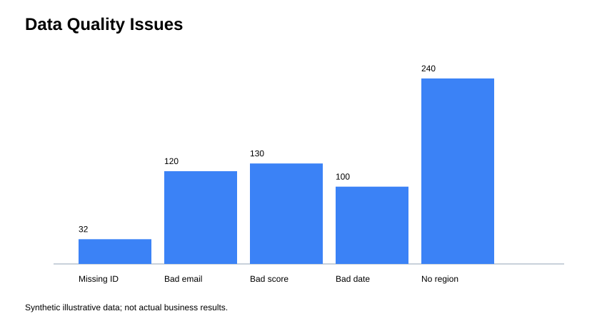
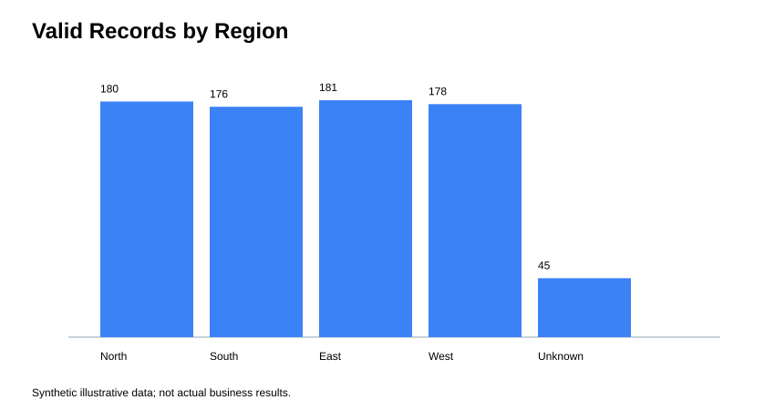

Automated ETL & Data Quality Dashboard
Portfolio project — Abdelhamid Moltazim · Data Analyst
Quality Issues

Valid Records by Region

Validation Rules
- Required user ID
- Valid email syntax
- Engagement score present and between 0 and 100
- Parsable last-login date
- Missing region standardized to Unknown